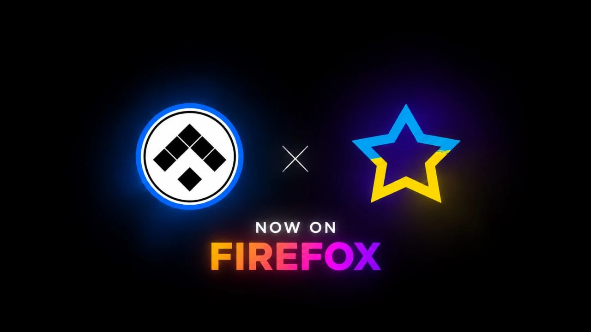

Alabuga Detector
Product Visuals / Launch Campaign
Презентация Alabuga Detector и баннер анонса для Firefox: от интерфейса с данными до короткого визуального сообщения.

Alabuga Detector : презентация продукта
Промоматериал с интерфейсом статистики: иерархия метрик, диаграммы и акценты на возможностях расширения.
О проекте
Презентация Alabuga Detector и баннер анонса для Firefox: от интерфейса с данными до короткого визуального сообщения.

Анонс для Firefox
Лаконичный баннер с парой знаков, неоновыми акцентами и крупным сообщением о запуске.
Давайте работать
вместе.
Открыт к предложениям по
продуктовому и digital-дизайну.